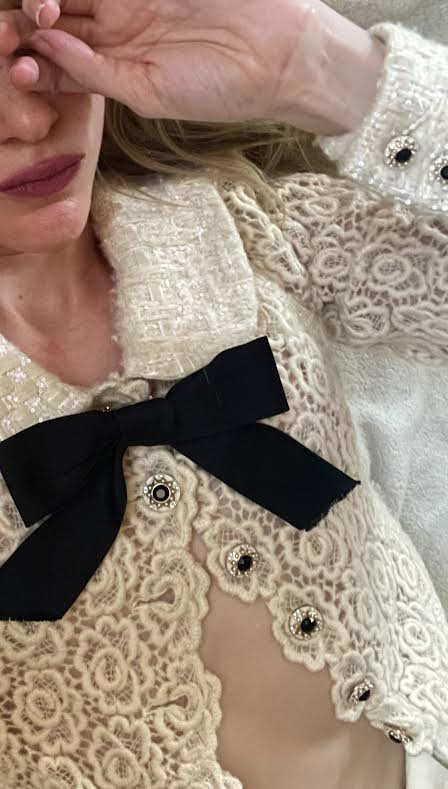
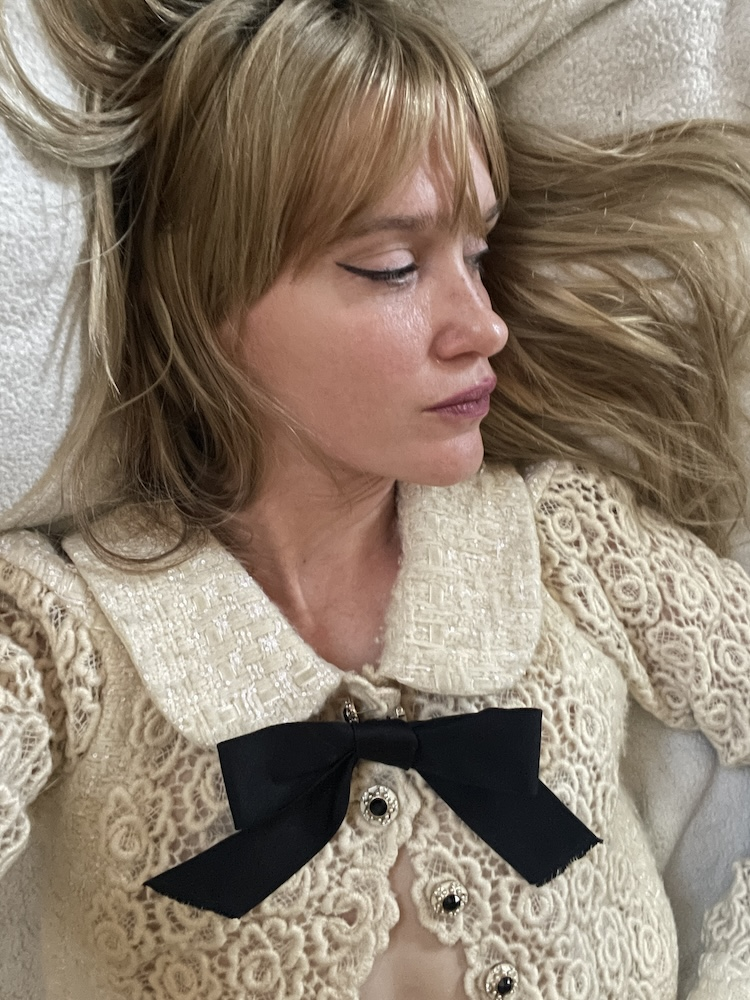

This Chanel dress from the pre-fall 2015 season is one of the nicest things I own. Each camelia in the Irish wool lace overlays the one behind it perfectly along the front, with custom bejeweled Chanel buttons situated in the center of each flower. The white tweed is embellished with sequins that make the dress shimmer as it moves.
Whether I mean to or not, I find myself reflecting a lot during this phase - so much so that I think I generally journal more under this phase than any other.
In this photo, I'm wearing a Cecilie Bahnsen dress. It's rarely ever now that I am excited about contemporary fashion, but Cecilie Bahnsen is one of the few designers embracing innovative silhouettes, fabrics, and techniques. As someone who sews, I can attest to the craftsmanship of the pieces.
Ut porta tincidunt ante, condimentum ornare lectus varius et.